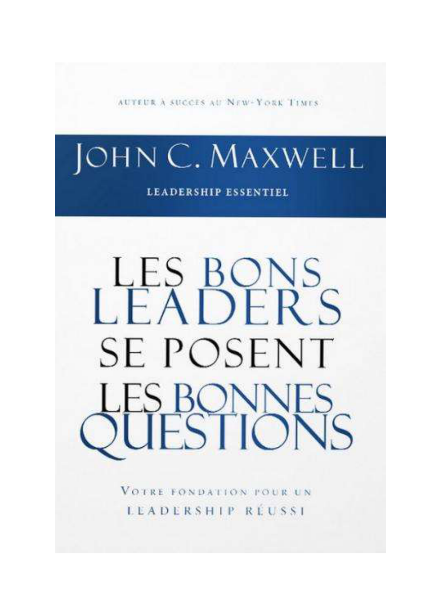

Les bons leaders se posent les bonnes questions
John C. Maxwell
Savoirs · Management et entrepreneuriat
540 pages PDF
Résumé général
Le livre organise des réflexions sur le leadership autour des questions qu’un responsable doit se poser et poser à son équipe, ainsi que des difficultés rencontrées dans la conduite des personnes.
Chapitres et pages
Table des chapitres non disponible.
Critiques externes
- Aucune critique externe vérifiée pour cette édition.
Lecteur PDF privé
Le lecteur intégré utilise la prise en charge PDF de ton navigateur. Si l’affichage intégré est bloqué sur ton téléphone, utilise le lien « Ouvrir le PDF ».